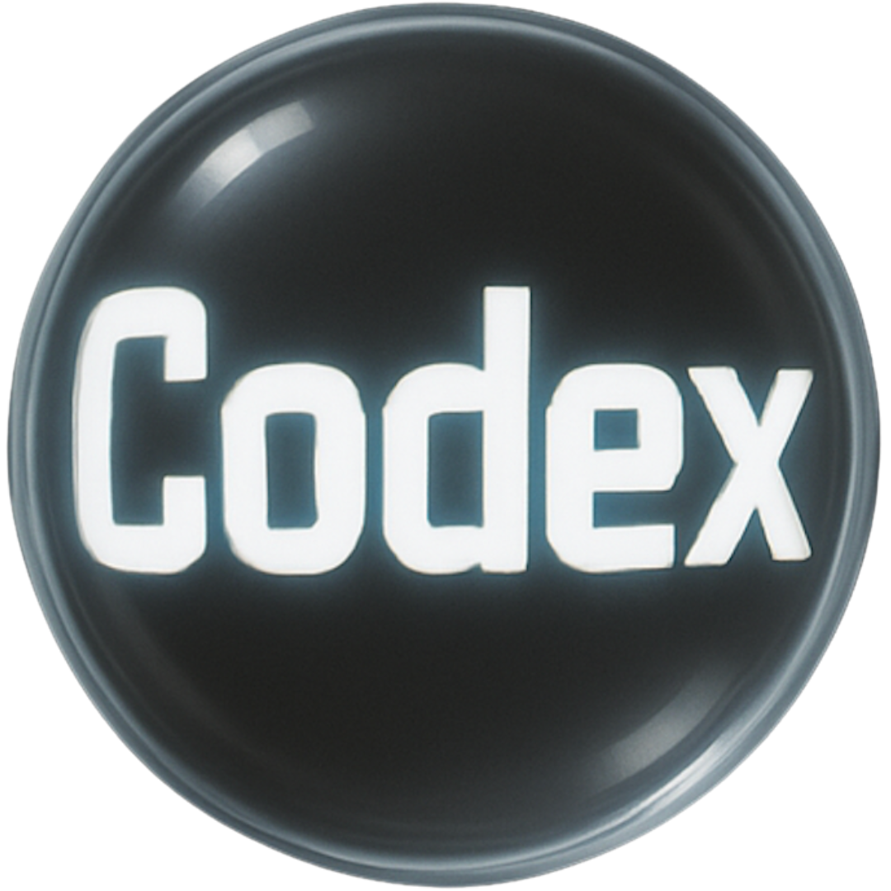
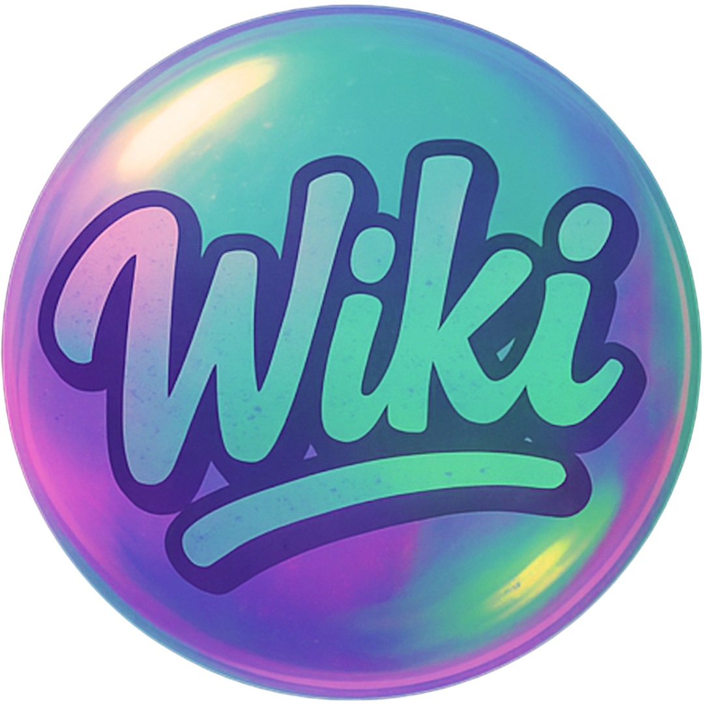
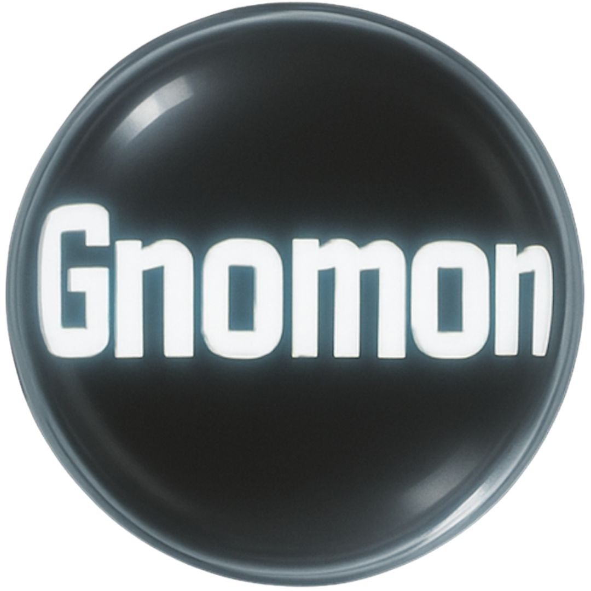

  
Select a Core, View Gnomon, or Explore the Wiki...
Core Name
#DH-XXX
click for signal
Archetype:
Intensity
Stability
Syncing Core Data...
Error syncing data.
© Dream Hive. All original concepts, frameworks, and content are the intellectual property of Dream Hive and its creator. Unauthorized use or reproduction is prohibited.